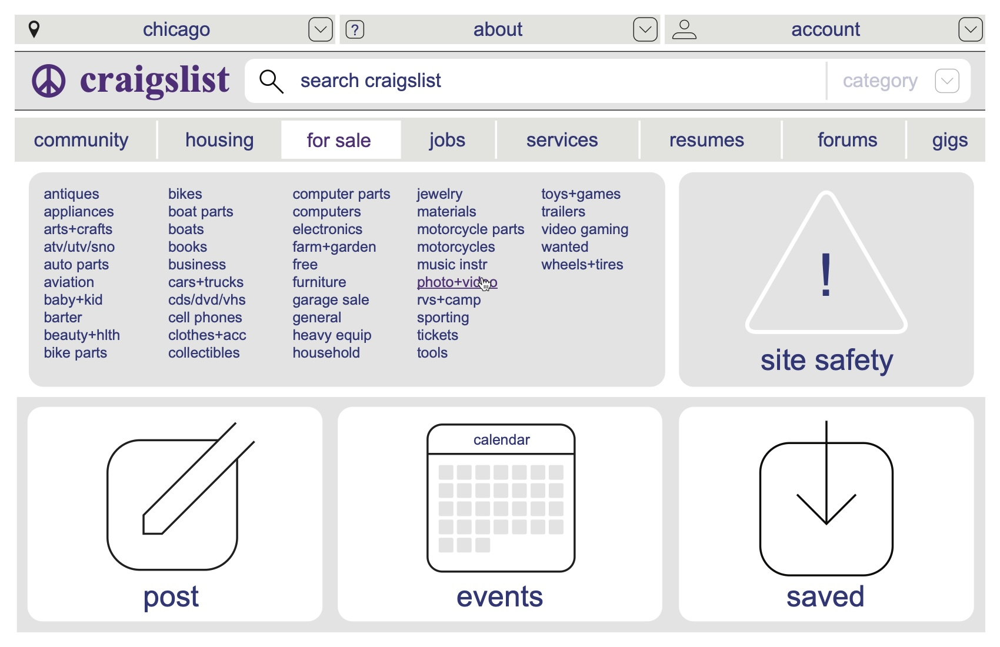

Problem and Research Methods
Methodology
- Goals
- Evaluate user interaction
- Focus on navigation efficiency
- ask completion rates
- Areas of confusion and potential safety concerns
- Participants
- Participants: Three users
- Frequent User
- First Time User
- Intermediate User
- Think-Aloud Protocol
- Observation & Feedback
- Participants: Three users
- Tasks
- Posting an item for sale
- Searching for a used bike
- Reporting a fraudulent ad
Identifying Problems
- Posting an Item
- Participants struggled to navigate the initial posting process due to unclear instructions and minimal visual cues.
- Confusion over subcategory selection led to prolonged task completion times.
- Minimal guidance led to repeated backtracking during the posting process.
- Searching for a Bicycle
- Search functionality lacked filters for critical parameters like price range or item condition, leading to frustration.
- The interface displayed search results in a text-heavy format, which participants found overwhelming.
- Reporting a Fraudulent Ad
- Difficulty locating the reporting option due to inconsistent placement and terminology.
- Vague instructions on how to proceed once the option was found.
Participant Feedback
- Frequent User
"I know my way around, but I often get frustrated with how much scrolling and manual effort it takes to find what I need." - First-Time User
"The design feels overwhelming. I didn't know where to start, and there was no help available when I got stuck." - Intermediate User
"It's functional, but not intuitive. The lack of filters is a major issue for searching."
Redesigning for Usability
Craigslist needs some updated styling and organization to make it easier to use.
To begin, the homepage needs to be reorganized with larger buttons and a more prominent search feature. New features include limiting the search to a category, a new site safety link (more on that later), and a link to saved items.
The location menu has been consolidated and simplified
There is a new about menu which has simplified and consolidated information about the site and for help within the site.
To access the category information most prominent on the current craigslist website, subcategories are listed in a singular location based on a click of a home page navigation bar based on the main categories of craigslist ads.
The browsing menu contains much the same information at the current craigslist under new organization. Filters are organized with collapsing menus on the left side of the page, with an added link to the safety page. The product thumbnails have been simplified with clear buttons for reporting and saving the post. The top level navigation remains the same as on all other pages.
The posting system on craigslist had long paths of links which don't save data. It is better to have a menu which edits the post, and a preview window which shows what the final post will look like. This design uses a similar layout to the filters and gives prominence to images of the items. The display of the post has also been simplified, with the image taking a majority of the window, and the descriptive information to the right. The button to contact the seller is given more prominence as well. Buttons to save and report would be displayed the same way as on the browsing menu.
Finally, a more simple and consolidated safety page is prepared, with visual prominence given to the reporting form. Relevant information is easy to find for a person seeking something specific, and it is organized to be perused by a new user with a passion for safety.
The key takeaways from this new design are primarily style-based. This design uses the same fonts and similar colors to current craigslist, but with more buttons for easier clicking and better adaptation for a mobile use. Using more opening menus allows for a decrease in the number of pages for the same amount of information or more. This also makes the infomation easier to find and more accessible.